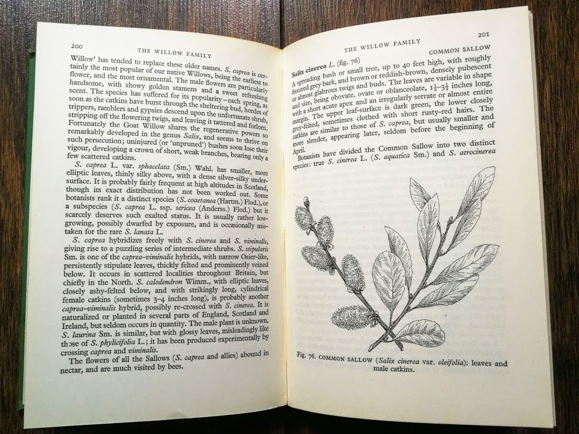
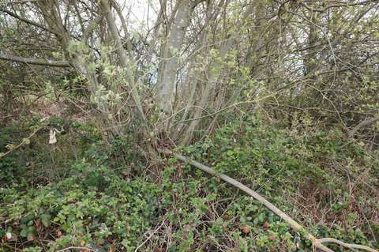
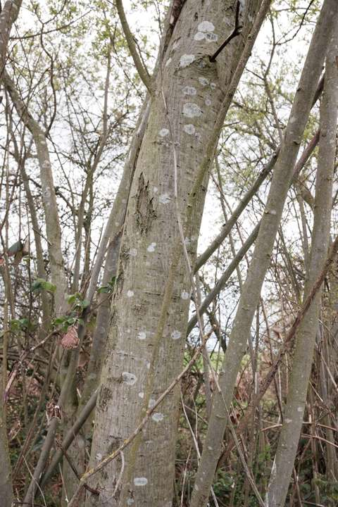
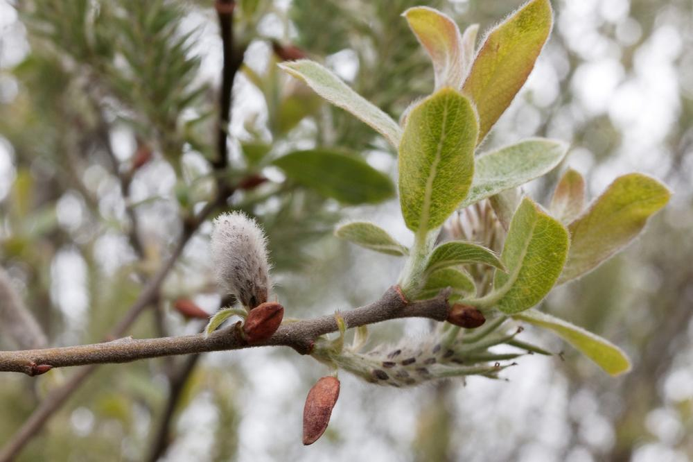
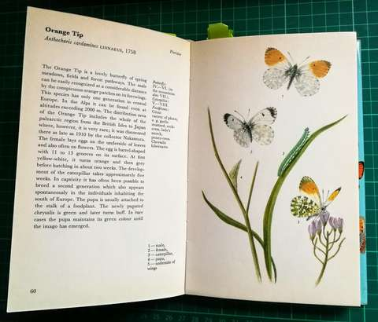
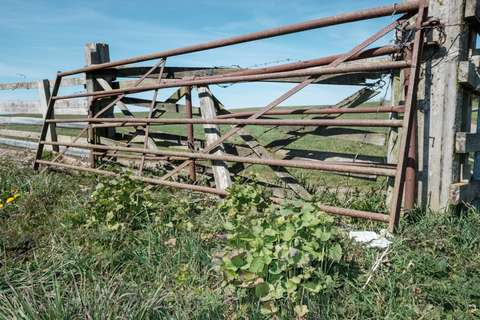

Notes on stinkhorns: starts its life cycle as an egg-like fungus, then leaves the ground as a phallus which smells like rotting meat. The aroma lures insects like blowflies to a surgery liquid laced with spores. The spores piggyback on the fly to other areas like dung. It’s edible (but why would you?) at the egg stage. Found in broadleaf and coniferous woodlands. Sometimes I see them in late autumn within edgeland plantations.
The corn poppy belongs in the field alongside other arable weeds and cultivated grain crops. A single poppy can produce a thousand seeds. These seeds lay dormant in the ground for decades, made permanent by the plough they churn into the earth dormant until the right conditions.
This continual permanence provides its moniker: corn poppy. The significance of which is lost to chemical weedkillers. Like those simplistic herbicide advertisements depicting a spray bottle killing a dandelion till it wilts into nothing, herbicides also kill association. Religated from field to leftover spaces, its contemporary moniker is now the common poppy.
The construction of the new housing estate - the removal of the agricultural topsoil and further levelling of the earth has created an abundance of poppies. Their dormant resilience to human disruption, construction or destruction, is their significant defining characteristic besides their colour.
There probably isn't a weed more appropriated in terms of imagery than the poppy. Early civilisations associated them with blood, a semiotic foundation underpinning today's cultural interpretation. Meanwhile, I wonder how many dormant poppy seeds lay in wait underneath my garden topsoil as the remnants of historic agriculture.
Goat willow, which I assumed to be a simple tree, is, in fact, several hybridized variations between goat (salix caprea) and grey (salix cinerea) willow -amongst others. I often encounter it within overlooked spaces, and like many plants associated with weeds, I dismissed it as commonplace. You can often find it as a deciduous shrub or modest scruffy tree growing in a sheltered and damp space.
I have a female hybrid willow in my garden. As tall as the house and leaning into the lawn, I often contemplate cutting it down. The times I've almost fallen out of it when attempting to prune its limbs extending over the neighbours fencing.
On occasion, I've whittled spoons out of off-cuts. The prepared wood is bone white, saturated with water and easy to work with when wiped with a cloth. The worked wood gradually turns off white with cooking and eating, obtaining a coffee-coloured patina. It's a practical softwood suitable for coppicing, fast-growing as a living hedge, and lauded by insect pollinators in spring. For all its benefits, I still associate it with wasteland.
Despite there being 400+ species under the willow/Salix genus, the word willow brings to mind the ornamental weeping willow. As a cultivated tree, it is found in urban parks and estate grounds. Its long branches drape over lawns, paths and waterways. This familiar landscape feature is a naturalised Chinese species, introduced into Britain and hybridized with the native white willow.
Before the cultural disregard, the goat willow once held religious associations for use on Palm Sunday. Its male trees, which produce attractive yellow catkins, were sought after as an alternative to palms used in processions. This tradition is redundant becoming frowned upon by early modern Britain. This book of the Kew series of Natural History from the 1950s uses negative connotations to describe the practice: hordes of trippers, ramblers and gypsies.
 Top left. British trees and shrubs (Kew series) 1958 by R D Meikle
The fostered weeping willow is coveted while the native goat/grey willow is neglected within cultural memory. Its religious appropriation is retired, while it also lacks horticultural ornamental fancy and a monetary value as lumber. Symbolic then that it now resides within informal wildlife-focused gardens, nature reserves and leftover spaces.
From an environmental perspective, both goat and grey willow are undervalued native species that provide an early food source for early pollinators in turn contributing a habitat for foraging birds. Fortunate then there is a female goat willow on my patch of edgelands located by a road drainage ditch. Like the willow in my garden, it could be a hybrid but it resembles the darker hairy branches of the goat willow.
This specimen is weed-like with a crowded crown of stems vying for space with the dominant hawthorn and blackthorn. Though well established the willow is singular, with no others in the area. Deer and rabbit are partial to willow saplings, both of which are in the area and could damage exposed willow saplings.
Goat willow (f) in my edgelandsThe main trunk of the goat willowDark stem of the goat willow and its cat’s paw catkin
Traditionally it is used as a herb for fish. While contemporary foraging guides designate it as a raw salad leaf. Aside from human appropriation, it is also a food source of the colourful orange-tip butterfly.
Orange tip - A Colour Guide to Familiar Butterflies, Caterpillars and Chrysalides 1974 by Josef MouchaGarlic Mustard by a rusted gate
As a weed: Jack-by-the-hedge thrives in the sheltered margins of hedgerows. Urban environments can provide the same, if not similar, shelter. Consequently, like the weeds discussed in last weeks issue 015, it has an invasive characteristic and is found on brownfield wastelands and car parks.
The surreal mundane familiarity of the roadside layby ends with a stride into the adjacent woodland. Among last year's leaf fall, the floor is populated by wild garlic. Their pungent leaves, elongated and pointing to the forest floor, paint the spring woodland in a fresh green. Its Latin designation, Allium uranium, ursus referring to bears attributing to its other name bear garlic, suggests that brown bears would enjoy this place. With none in sight, we collect some, using them throughout the week for pesto, cheese scones, and lasagne. It differs from conventional garlic, I find that it has a warm chive taste. Given its uncultivated and brief availability, it signifies spring.
More people are buying buddleia for their gardens, but it's classified as an invasive species and is a problem on British railways. It's hard to walk by a railway line in Britain and not see buddleia. Along fences by the tracks and almost any patch of waste ground, you will notice the long, slender clumps of flowers, usually lilac but also blue, deeper purple or white, at the end of long, arching branches. (Gupta 2014)
Rob Cowen describes the Buddleia or ‘butterfly bush’ escape from Kew Gardens and into the urban landscape:
The species had come a long way since its seeds were sent to London’s Kew Gardens from China almost a hundred years earlier. Becoming renowned for its late trusses of colourful flowers and a honey-rich scent irresistible to insects and butterflies, it had earned the colloquial name of ‘The Butterfly Bush’ and quickly spread throughout England as a much-prized garden shrub. But buddleia wasn’t content to be contained for long. Pavement cracks, waste ground, development land, walls, chimneys and shingle banks turned out to be ideal replicas of the rocky screen of its native Sichuan province. By 1922, it had jumped the fence and wild bushes were being reported in all manner of strange and sheer places, rampantly colonising Britain’s railway network. Erupting from trackside tunnels and bridges, its rootstock was decried as weakening surfaces and structures and the plant swiftly fell from favour.
Cowen, Rob. Common Ground (p. 243,244)
Cowen continues by discussing the paradoxical relationship of the bush with conservationists, gardeners and wildlife enthusiasts:
Conservation charities, initially wary of the risks an invasive species posed to biodiversity, recognised that buddleia’s abundance was creating crucial feeding sites for many species of bees, butterflies and moths. And it was the same story in gardens, for despite its demonisation in official quarters, buddleia had never ceased to be cherished closer to home. Being an exotic-looking shrub, a magnet for wildlife and requiring little or no looking after, it had been planted continually by gardeners
Cowen, Rob. Common Ground (p.,244)
Other possible routes of research are other invasive species: Japanese knotweed, Himalayan balsam
Weeds such as Bindweed are common sites on industrial, edgeland, and wasteland.

{kind=link}
{kind=link}